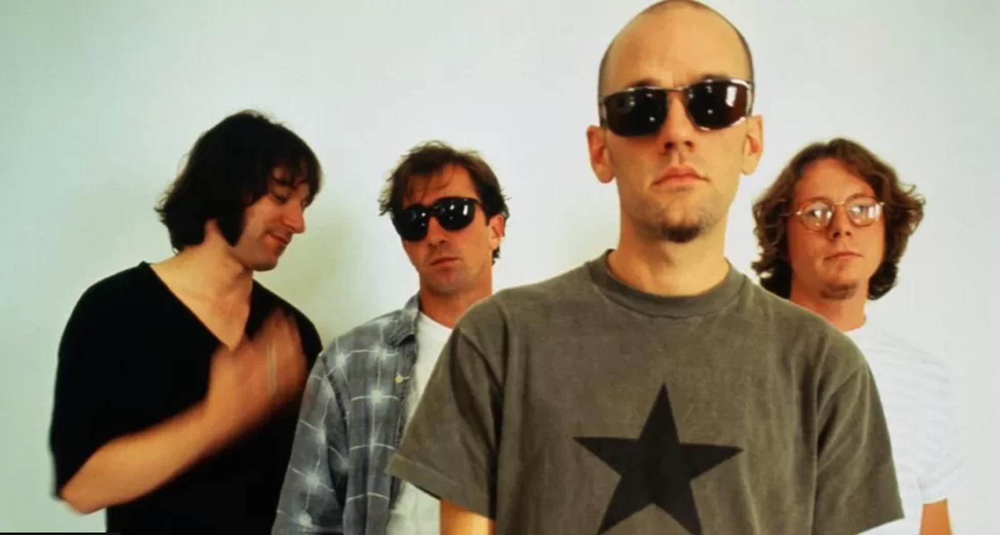

About the band
REM formed in Athens, Georgia USA in 1980 and quickly rose to become one of the formost alternative rock bands, enjoying both commercial and critical success.
By the time they broke up amicably in 2011 they had produced 15 studio albums with total sales of over 90 million, and are acknowledged as having influenced numerous other bands including The Smiths, Nirvana, Radiohead and The Pixies.
